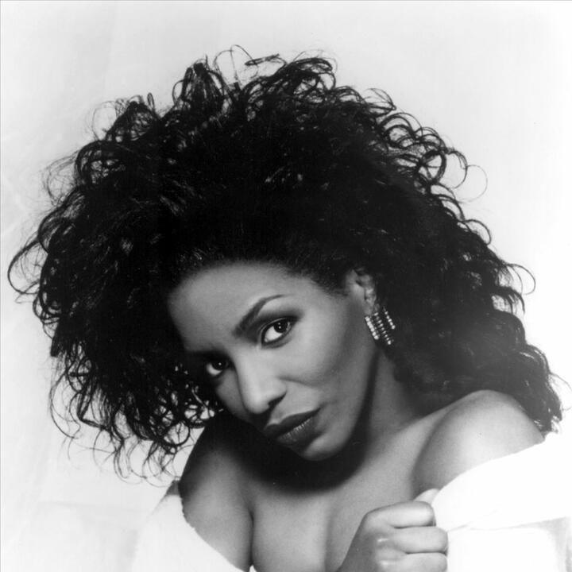

Click the button to open a new browser window.
The Grammy-award winner was only 11 years old when she won Amateur Night a record 6 times at the famous Apollo Theater. This led to her career on Broadway where she starred in the WIZ and later got a recording contract. Mills rose to stardom as "Dorothy" in the original 7 Time Tony Award Winning Broadway run of the musical The Wiz from 1974 to 1979.
The song "Home" from the show later became a Number 1 U.S. R&B hit for Mills and her signature song. During the 1980s, Mills scored five Number 1 R&B hits, including "Home", "I Have Learned to Respect the Power of Love", "I Feel Good All Over", "(You're Puttin') A Rush on Me" and "Something in the Way (You Make Me Feel)". Mills won a Grammy Award for Best Female R&B Vocal Performance for her song "Never Knew Love Like This Before" in 1981, which was a cross-over success.
However in her June 30, 2021 interview with Matthew Allen of The Grio, Mills stated
I’ve never wanted to go and be Pop because I wasn’t changing the way I sung. I wasn’t singing these songs that I couldn’t relate to, and I was real clear about that. So, I just want our young entertainers to stay Black, stay who you are. Don’t want to go over there and be Pop. Stay true to your music. That’s very important. Don’t sell out. Don’t sell out, because we don’t want you when you sell out.